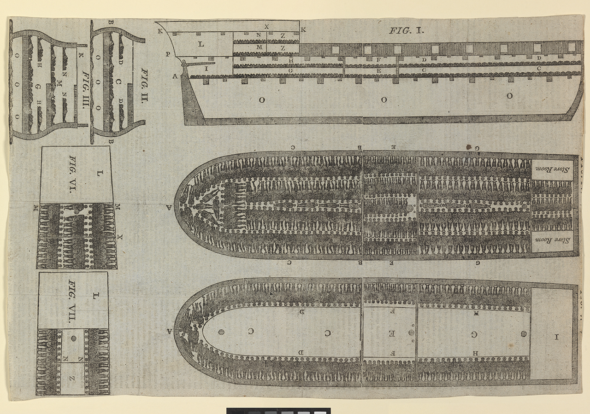
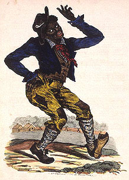
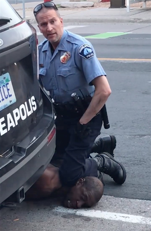

A Virtual Exhibition by Ezra Kahn
Race is not a law of nature; it is a human construction. Race is the thread that has sewn the soft, cotton fabric of the United States of America–the blanket that has been used for comfort, and for suffocation. Race in America has been abhorrently woven for over 400 years, during which Black bodies have often been the thread of choice. The contrast between “Black” skin and “White” skin made the perfect ingredient for the creation of an untrue binary. But Blackness is not truly the color of the night sky, and Whiteness is not the color of the clouds. The story of the United States is the story of how this shroud was fabricated.
The issue of race is that it is so tightly bound to racism, knotted, like two orbiting stars. The praising of race leaves little room for error so as not to become the praising of racism. On the contrary, the denial of race, the pretending not to see the system at all, is a pretentious embrace of privilege; An embrace that does no service to the victims of the harsh, violent, and intrusive everpresence of racism; To do so only absolves the conscience of the racial denier. As race shall neither be denied nor enjoyed, then race must be observed–understood. To learn the inner workings of race is to absorb history and its teachings, and to know race–and its shallowness–is to crush racism.
Slavery is the industry upon which race was built in America. In this industry, Black people were forced to appear as slaves. Maintaining this image was critical to maintaining slavery. Public whippings, executions, rape, and destruction were all designed to maintain the image of an enslaved Black person, to internalize that image in the mind of the enslaved person and the enslaver. What both parties believe becomes true in all effect. And even when the enslaved attempt to escape or to prove themselves worthy of freedom, they are all but destined to failure, because what the oppressor believes is the truth in effect.
The oppressors in history are powerful because they control the truth. One of the most important tools for control is nostalgia. Nostalgia is a regressive addiction, a clinging grasp onto comfortable images. Nostalgia is inherently for the privileged because the unprivileged lack old comforts to long for. Privileged men, caught up in nostalgia, dragged the horrors of slavery into the century that followed its proclaimed abolition. Nostalgia has carried the terrorist hate ideologies of the KKK into the present world. Nostalgia is dangerous because of its qualities of self-preservation. A nostalgic man will recreate history–forge imagery–to make the world his own.
Race is born in imagery. For this reason, understanding imagery is essential to understanding race. Imagery can be made to alter race. This can be done intentionally, to oppress for selfish gain, or to perpetuate a learned hatred. And just as often as race is created intentionally, race can be constructed unintentionally. It is important to consider intention alongside side effects. This museum will examine instances of imagery impacting the creation of race.
In late August of the year 1619, the White Lion, an English privateer ship, lands near Point Comfort. Aboard the ship are “20 and odd” enslaved Angolans that were taken from the Spanish San Juan Bautista, the first enslaved Africans to be brought to the British colonies of America (“1619: African”).
Oftentimes, ads for lost pets–a cat or a small dog–can be found affixed to wooden telephone polls; runaway slave ads were tragically reminiscent in their dehumanizing and petlike characterizations of people escaping slavery. Slaveholders posted runaway slave ads–usually in newspapers–during the 18th and 19th centuries in hopes that the descriptions would aid the capture of those who had escaped from enslavement. Describing an escaped “Negro fellow” named Jack, this ad was posted on the 19th of March, 1767, in the Virginia Gazette, a newspaper. The writer, one Charles Mason, perhaps a slaveholder or agent to one, enumerates characteristics of Jack’s general appearance but also elaborates on almost endearing aspects, such as Jack’s “very agreeable countenance” and the “dimple in each cheek” when he smiles. These paternalistic accounts portray Jack like a child, demonstrating an ingrained condescension toward the enslaved by slaveholders. At the same time, a “piece taken out of one ear,” professedly “by accident,” implies Jack lacked physical safety–likely a component in his decision to escape–and alludes to the greater physical abuses of slavery (“Virginia Runaway”).
… a likely [good-looking] Virginia born Negro fellow named JACK, about 5 feet 9 inches high, about 28 years old, of a very black complexion, broad faced, very broad teeth, of a very agreeable countenance, and when he smiles has a dimple in each cheek; his hair trimmed to a roll and by frequent combing has grown to a prodigious length; his feet are remarkably large, and has by accident had a small piece taken out of one ear, but which I cannot recollect. . . He is a very ingenious fellow, can do cooper’s work [make wooden barrels], and is supposed to have a pass from some villainous person or other, and will endeavour to pass as a freeman; and as he is a sensible arch [crafty] fellow, probably he will attempt to make his escape from off this continent. . . Charles Mason, VG, 19 March 1767
(“Virginia Runaway”)
While this image asked for abolition, it sacrificed Black individuality. This diagram was designed in Plymouth, Massachusetts, and published by the Plymouth Chapter of the Society for Effecting the Abolition of the Slave Trade in December 1788 (“The Brookes”). Featured are illustrations of the Brookes, a slave ship, from different sides. Prominent in the center, a top-down cross-section depicts countless black figures inhumanely packed like sand across the boat's entire floor. A side view (Fig. III) reveals multiple floors of people lying in this fashion, without any space to sit up (“The Slave”). The viewer is separated from the victims of this transport in this drawing, which became the most widely reproduced image of the Middle Passage by abolitionists. Perhaps it is the separation that made this image so popular, as the viewer is left to deplore slavery in a distant way, which would be unlikely if they were made to feel guilty (“The Brookes”). Despite this image's profound role in the spread of abolitionism, it relies on the portrayal of enslaved Africans as docile–a false image. The kind of abolitionist attitude that this image creates is not based upon belief in equality and mutual strength, but rather upon Black inferiority and weakness.

A diagram of the Brookes (“The Slave”)
Congress passed the Naturalization (or Nationality) Act of 1790, limiting citizenship by naturalization to “being a free white person.” This act creates the “white” race at the federal level, and its restrictions persist in some form until 1952 (“Nationality Act”).
“Jim Crow,” a term that has come to be associated with an era of racial segregation, has embodied multiple meanings rooted in the oppression of Black Americans. “Jim Crow” was popularized in the late 1820s and 1830s as a character played by Thomas D. Rice, the “Father of American minstrelsy.” Rice was one of the first blackface performers, rubbing burnt cork on his face as a racist exaggeration. By 1838, “Jim Crow” was also used as a derogatory term for African Americans (“Who Was”). Pictured is a drawing of “Jim Crow,” Rice’s mocking depiction of an enslaved Black man. Contorted limbs and ragged clothing, paired with wide white eyes accentuated by his blackface, create a creepy, insane-looking figure. As minstrel shows across the country were inspired by this hateful image of blackness, using “Jim Crow” as a model for entertainment (“Blackface”). This portrayal of a black-skinned man, messy and seemingly not in control of his own body, perpetuated ideas that African Americans are lazy, stupid, and even non-human. By the end of the century, “Jim Crow” came to refer to “Black Codes” that robbed Black people of their rights, after the character shaped beliefs that African Americans were unworthy of integration (“Who Was”).

A depiction Thomas D. Rice playing “Jim Crow” (“Blackface”)
Starting in 1861, the North and the South fought a gruesome war in which 620,000 combatants died, nearly outnumbering the American service member death toll in all other wars combined. The following period of Reconstruction witnessed the tumultuous attempt to transition out of a society rooted in slavery (Foner, Eric).
One film, widely considered to be the most racist film ever produced, was viewed by millions of Americans and was screened in both the White House and the Supreme Court. Thomas Dixon Jr., a White man born in 1864, grew up in North Carolina after the Civil War. Dixon despised what he saw as an unfairly treated South, which in his mind was being taken over by African Americans, leading him to create a motion picture, The Birth of a Nation, 1915, to tell his version of a story that President Wilson called “so terribly true” (Franklin, John Hope). In part of the movie, a White family is portrayed defending their cabin against men in blackface, intended to show African Americans looking for revenge. During the fighting, the face of a White girl crying is juxtaposed with the cruel, smiling faces of the blackface depictions. This contrast intends to invoke pity for White Southern victims of supposed attacks by African Americans. Images of the KKK coming to save the family portray the hate group as heroic (“D.W. Griffith’s”). This film’s publication coincided with a resurgence of the KKK, demonstrating how its racist imagery provoked racist action (Franklin, John Hope).
The Birth of a Nation, 1915, (“D.W. Griffith’s”)
During WWII, the Tuskegee Airmen became the first Black aviators and ground crews to serve the U.S. Army Air Forces. Despite facing racial prejudice, the Tuskegee Airmen proved themselves in the air, earning three Distinguished Unit Citations for extraordinary heroism (“Tuskegee Airmen”)
One of the most immediately recognizable speeches in the world, Dr. Martin Luther King Jr.’s speech at Washington on August 28th, 1963, was profound for numerous reasons. Crowds of Black and White, men, women, and children can be seen filling the audience as King stands in front of them. The outstanding crowd is a strong presentation of unity and power. As King calls for the end of racism, segregation, and the unjust treatment of Black Americans, his figure provides a striking image with the Lincoln Memorial as his backdrop. He repeats the phrase “I have a dream” as the crowd cheers. He connects his message to his children, who he wants to “not be judged by the color of their skin but by the content of their character." In doing so, he makes his speech universal, as children and love for children is universal. King speaks of unity and an African American people that will “free one day.” His message is inclusive and inspiring. He positions African American freedom as a goal that should motivate all, a goal that does not come with compromise from White people, but rather brings a better future for all (“Martin Luther King”).
Dr. Martin Luther King Jr.’s speech at Washington, Aug 28th, 1963 (“Martin Luther King”)
On May 25th, 2020, George Floyd was killed during an arrest in Minneapolis by former police officer Derek Chauvin. Chauvin held his knee against Floyd’s neck, dressed in his blue officer uniform, pressing Floyd into the pavement for more than nine minutes as he told the officers he could not breathe (“George Floyd: What”; “George Floyd Neck”). After telling officers twenty times that he was unable to breathe, he appeared to go unconscious (“George Floyd: What”). In the photograph, his face is against the ground, his eyes appear shut, and he seems immobile. The officer glances out toward the camera, watching him commit a violent crime. (“George Floyd Neck”) The image of the physical act of a man being crushed under another man’s knee is horrifying. It is evidence that Black people can and will be killed at the mercy of White police. George Floyd was publicly executed. Officer Chauvin, who killed Floyd, was later charged with murder. Floyd was a devoted Christian, by all accounts a good man, when he died at 46 (“George Floyd: What”).

Officer Derek Chauvin knee pressing George Floyd (“George Floyd Neck”)
This exhibition argues that race is not a truth but a manifestation of stories told through violence, imagery, and memory. From runaway slave advertisements to the murder of George Floyd, images have shaped the American understanding of race. Rather than reflecting racial ideas, images create them. Race survives in the reproduction, absorption, and adaptation of these existing images.
The Black-and-White binary at the heart of the American story is therefore a falsehood–a falsehood crafted for the justification of exploitation and the preservation of power. The fabrication of race has become tangible. The legacy of the fabrication of race–the crimes of slavery, the Jim Crow era, the KKK, all the racial hate in this nation–can be seen today in the ongoing battle over the Voting Rights Act, the rhetoric surrounding people who have immigrated to this country, and violent policing. As nostalgia softens a history of violent oppression, as making America “great again” becomes a federal priority, as books are banned, we must look at the imagery of our past. If not, the truth will be erased, smoothed away.
Images are just as powerful for effecting change as for suppressing it. Dr. Martin Luther King Jr.’s televised march changed the world forever. The ability for anyone to record, to capture the death of George Floyd on camera, to share it with the world, has given newfound power to an entire generation. Images can expose, and images can inspire.
Understanding race is not accepting it as truth, but recognizing the power that creates it, the motivations behind the way we have been led to think of each other. The greatest setback in the progress toward unity is being made to believe that one can be above racism. Racism is the fabric of our nation. It is our story.
Works Cited
"Blackface: The Birth of an American Stereotype." National Museum of African American History and Culture, Smithsonian, nmaahc.si.edu/explore/stories/blackface-birth-american-stereotype. Accessed 11 May 2026.
"The Brookes - Visualizing the Transatlantic Slave Trade." 1807 Commemorated, archives.history.ac.uk/1807commemorated/exhibitions/museums/brookes.html. Accessed 11 May 2026.
"D.W. Griffith's 'The Birth of a Nation' (1915)." YouTube, uploaded by Donald P. Borchers, 10 Jan. 2023, www.youtube.com/watch?v=BoMgMzizDNU.
Foner, Eric. "Civil War and Reconstruction, 1861-1877." Gilder Lehrman Institute of American History, www.gilderlehrman.org/history-resources/essays/civil-war-and-reconstruction-1861-1877. Accessed 10 May 2026.
Franklin, John Hope. "'Birth of a Nation': Propaganda as History." The Massachusetts Review, vol. 20, no. 3, 1979, pp. 417-34. JSTOR, www.jstor.org.uprep.idm.oclc.org/stable/25088973. Accessed 6 May 2026.
"George Floyd Neck Knelt on by Police Officer." Wikipedia, 5 June 2020, en.wikipedia.org/wiki/File:George_Floyd_neck_knelt_on_by_police_officer.png.
"George Floyd: What Happened in the Final Moments of His Life." BBC, Smithsonian, 30 May 2020, www.bbc.com/news/world-us-canada-52861726. Accessed 13 May 2026.
"Martin Luther King - I Have a Dream Speech - August 28, 1963." YouTube, uploaded by SullenToys.com, 20 Jan. 2011, www.youtube.com/watch?v=smEqnnklfYs.
"Nationality Act of 1790." Immigration History, Immigration and Ethnic History Society, immigrationhistory.org/item/1790-nationality-act/. Accessed 4 May 2026.
"1619: African Arrival Exhibit." Hampton History Museum, www.hampton.gov/3584/1619-African-Arrival-Exhibit. Accessed 10 May 2026.
"The Slave Ship 'Brooks.'" Royal Museums Greenwich, www.rmg.co.uk/collections/objects/rmgc-object-254938. Accessed 7 May 2026.
"Tuskegee Airmen." National Air and Space Museum, airandspace.si.edu/explore/stories/tuskegee-airmen. Accessed 6 May 2026.
"Virginia Runaway Slave Advertisements, 1745-1775." National Humanities Center, nationalhumanitiescenter.org/pds/maai/enslavement/text8/virginiarunawayads.pdf. Accessed 7 May 2026.
"Who Was Jim Crow." Jim Crow Museum, jimcrowmuseum.ferris.edu/who/index.htm. Accessed 7 May 2026.